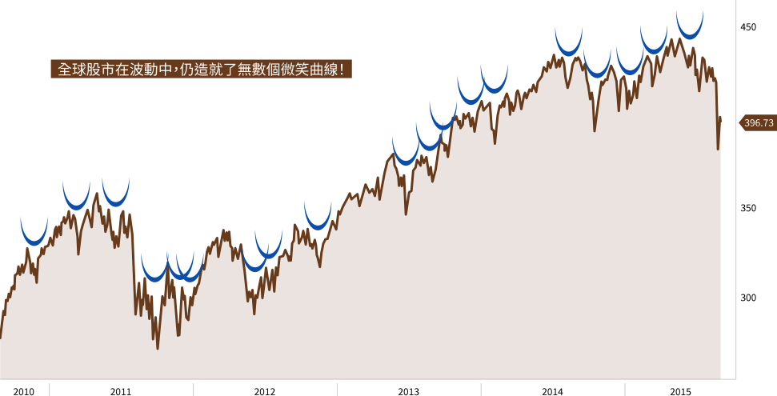

市場如同沒有盡頭的雲霄飛車般震的投資人膽顫心驚，若您只是單純的希望透過投資基金累積人生財富，又不想過著提心吊膽的生活，富蘭克林提供您「定期定額」這顆投資”定”心丸，它最重要的使用說明只有一條：
「遇到重大利空，定期定額都應該持續進行甚至加碼扣款！」
若歷史重現，你想當哪一種人?
我們以2008年金融危機為例，面對海嘯來臨，投資人可能會有的三種選擇：
A 因內心極度恐慌選擇認賠出場
B 不論市場漲跌都持續定期定額
C 遇利空勇敢加碼一倍定期定額
短短三年後，
會有怎樣不同的結果呢？
我們試算2007年10月底至2010年10月底，每月定期定額投資5000元在各主要指數的投資人，
在上述三種情境下最後的累積報酬率。
結果發現，持續與加碼定期定額的投資人，
其報酬率明顯優於遇重大利空即贖回的投資人！
我們再以同樣區間，實際試算2007年10月底至2010年10月底，每月定期定額投資5000元在美股S&P500指數的投資人，在上述三種情境下最後的累積報酬率。
更能明顯的顯示持續(或加碼)定期定額的投資人，
報酬率表現都優於停扣或是單筆投入的投資人
資料來源︰彭博資訊，原幣計價自2007/1/1至2013/12/31。指數以MSCI系列指數為主<本文提及之經濟走勢不必然代表本基金之績效，本基金投資風險請詳閱基金公開說明書>
資料來源︰理柏資訊，新台幣計價自2007/10/31至2010/10/31。「高點進場」係以2007年10月底為進場點，「李曼兄弟破產後」係以2008/9/30為贖回或加碼的計算時點。定期定額報酬率係理柏資訊假設每月1日扣款，遇例假日則以次一營業日計算。投資人因不同時間進場，將有不同之投資績效，且過去績效不代表未來績效之保證。投資報酬率以投資報酬除以投資成本簡單計算，暫不考慮時間價值。投資人不能直接投資指數。<以上試算結果並非代表特定基金之投資成果，亦不代表對特定基金之買賣建議。基金不同於指數，可能會有中途清算或合併等情形。投資人無法直接投資指數>
資料來源︰理柏資訊，史坦普500指數，台幣計價，計價自2007/10/31至2010/10/31。「高點進場」係以2007年10月底為進場點，「李曼兄弟破產後」係以2008/9/30為贖回或加碼的計算時點。定期定額報酬率係理柏資訊假設每月1日扣款，遇例假日則以次一營業日計算。投資人因不同時間進場，將有不同之投資績效，且過去績效不代表未來績效之保證。投資報酬率以投資報酬除以投資成本簡單計算，暫不考慮時間價值。投資人不能直接投資指數。<以上試算結果並非代表特定基金之投資成果，亦不代表對特定基金之買賣建議。基金不同於指數，可能會有中途清算或合併等情形。投資人無法直接投資指數>
堅持，是最終能享受微笑的關鍵
市場漲多必跌、跌深必漲，漲跌走勢彷彿微笑時的嘴型，這就是所謂的「微笑曲線」。
然而，沒有人能精準預測微笑曲線的高低點，而定期定額最大的優勢，在於市場下跌時能用相同成本買到更多單位數，等到市場上漲時就能享有獲利成長機會！
定期定額是一種無需選擇進場點的懶人投資法，
只要堅持持續扣款不中斷，就有機會獲得耐心投資的好回報！
摩根士丹利全球指數走勢

資料來源: 彭博，截至2015年8月31日。
全球股市在波動中，仍造就了無數個微笑曲線!
因為定期定額是一種”以時間換取獲利空間”的投資方式，若試算新興股市成立以來任一個月進場定期定額投資，不難發現投資年期越長累積報酬率越高，正報酬率機率也越高！一旦耐不住寂寞或擋不住恐慌在低點停扣，反而會讓投資功虧一簣！
長期投資的耐心與面對震盪的堅定，絕對是定期定額的致勝法門！
| 定期定額累積 | 投資六個月 | 投資一年 | 投資三年 | 投資五年 | 投資十年 |
| 報酬率(%) | |||||
| 平均值 | 3.49% | 6.67% | 18.88% | 31.96% | 60.48% |
| 最佳報酬率 | 37.93% | 53.44% | 94.05% | 171.62% | 263.66% |
| 最差報酬率 | -39.57% | -44.36% | -37.99% | -32.16% | -13.57% |
| 正報酬機率(%) | 65.09% | 70.67% | 79.49% | 83.49% | 94.76% |
資料來源︰理柏資訊，台幣計價自1987/12/31至2020/02/29，以MSCI新興市場指數為準。投資期間一年、三年、五年與十年。定期定額報酬率係理柏資訊假設每月1日扣款，遇例假日則以次一營業日計算，每個月投資5000元新台幣之投資成果。投資人因不同時間進場，將有不同之投資績效，且過去績效不代表未來績效之保證。投資報酬率以累積投資成果除以投資成本簡單計算，暫不考慮時間價值。<以上試算結果並非代表特定基金之投資成果，亦不代表對特定基金之買賣建議。基金不同於指數，可能會有中途清算或合併等情形。投資人無法直接投資指數><本文提及之經濟走勢不必然代表本基金之績效，本基金投資風險請詳閱基金公開說明書>
大撿便宜趁現在
定期定額雖然號稱懶人投資法，但仍應選擇長期趨勢向上的市場才能提高投資勝率；波動度較高的股票型基金尤其容易發揮定期定額平均成本的威力！統計過去十年國內各類型基金定期定額投資報酬率，科技、公用事業、美國股票與生技醫療相關股票型基金，堪稱定期定額投資優等生！
正為淨值下跌所苦的投資人千萬不要停扣，這正是您加速累積單位數大好機會；對於尚未進場的投資人而言，此刻更是備妥銀彈撿便宜的天賜良機！
國內核備基金定期定額十年，各類基金報酬率平均值(取前十名)與其單筆報酬率
資料來源：理柏資訊台幣計價，統計2010/03/01~2020/02/29完整十年期定期定額報酬率與單筆報酬率。定期定額理柏資訊假設每月扣款5000元，每月1日扣款、遇例假日則以次一營業日計算。例如：十年期之累積投資成果係假設自2010/03/01起（含）每月1日扣款，共計扣款120次之截至2020/02/29止計算而得之歷史報酬，其他期間之累積投資成果以此類推。投資人因不同時間進場，將有不同之投資績效，且過去績效不代表未來績效之保證。投資報酬率以累積投資成果除以投資成本簡單計算，暫不考慮時間價值。
若是手上已經持有美股或新興股債基金的投資人，
又該如何面對市場的震盪？
1
穩健及保守型投資人，建議續抱等待反彈
但投資組合中建議可增加低波動、低相關性和貨幣高度避險的債券型基金，包括美國GNMA政府債、伊斯蘭債、以及精選當地政府債的全球政府債券型基金，其中GNMA政府債更是聯準會此次量化寬鬆的購債標的之一，可望優先受惠並平衡整體投資組合的波動風險。
2
積極型投資人
建議可透過提高定期定額扣款金額或增加扣款次數方式加速累積單位數。
3
偏好單筆投資者
衷心建議等待股市底部確立後再進場，或採取單筆分批布局，除了上述三檔抗震基金外，亦可考慮具有評價面優勢的新興市場平衡型基金的長期成長機會。
富蘭克林專為投資人設計新一代的『定期定額自由選』功能，具有三大優勢：
從1號到31號都能扣款，操作靈活，不受傳統6/16/26號的限制，方便投資人配合自己的發薪日來做扣款喔。
當天下單、當天扣款，不受傳統須提前設定的限制，操作起來更靈活。
可用紅利折抵手續費，至最低0.3%，相當於1折的優惠，更減輕投資人每月投資的負擔。